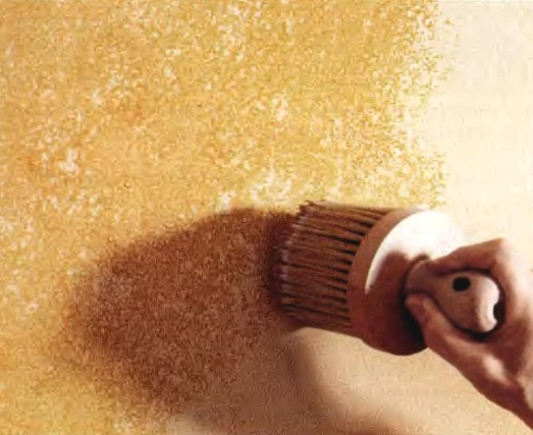

Общая классификация

Нанесение фактуры на штукатурку стен
Нанесение фактуры на штукатурку стен
На рынке появляются инновационные отделочные материалы, Не смотря на это, решения, апробированные годами, до сих пор не утратили своей актуальности.
Рассмотрим критерии для общей классификации этих средств:
В соответствии с эксплуатационными условиями отделочные материалы подразделяются на наружные и
Наружные модификации
предназначены для обустройства экстерьера строительных объектов. К широкому перечню данных средств предъявляются такие требования как устойчивость к негативным воздействиям факторов внешней среды, прочность и долговечность.
Внутренние модификации
используются при отделке интерьеров. Поэтому наиболее строгие требования предъявляются к эстетике готового результата.
Исходя из компонентов, применённых при производстве, различаются искусственные и натуральные отделочные материалы. Натуральные материалы относятся к категории экологически чистых и безопасных изделий.
Среди ненатуральных материалов встречаются как экологически безопасные, так и токсичные изделия. Впрочем, по причине строгих требований международной стандартизации, потенциально небезопасных материалов становится все меньше.
По назначению отделочные материалы эксклюзивные и традиционные подразделяются на:
Декоративные – могут представлять собой тонкие рулонные материалы (обои, линолеум, ковролин и т.д.), плиты малой толщины (декоративный камень, керамика, керамогранит и т.д.) и составы, предназначенные для нанесения на поверхность (декоративная штукатурка, лакокрасочные материалы).
Конструкционно-отделочные – служат не только декоративным решением, но и конструктивными элементами (блоки из стекла, лицевой кирпич, декоративный бетон и т. д.).
Специально-отделочные – предназначены для выполнения определённых функций (теплоизоляция, шумоизоляция).
В соответствии с консистенцией отделочные материалы могут быть:
Жидкими – смеси на основе связующих и декоративных компонентов (наливные полы, лакокрасочные составы и т. д.);
Штучными – небольшие изделия (керамическая плитка, паркетная доска и т.д.);
Сборными элементами — плиты и листы, монтаж которых выполняется с использование саморезов гвоздей заклепок клея и т.д.